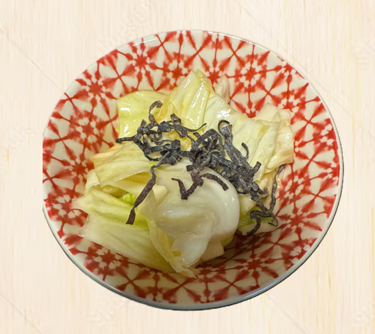
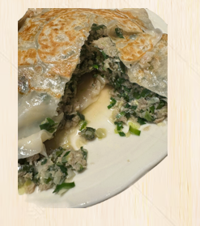
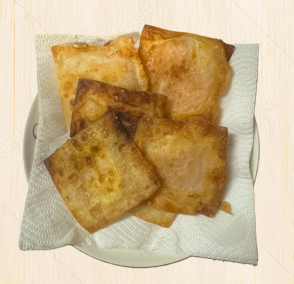

- トップ >
- おつまみのレシピ
おつまみのレシピ
簡単に作れる居酒屋風のレシピを4週間に分けて公開します！
やみつきキャベツ
シャキシャキ食感がおいしい、居酒屋の定番メニューです。 ごま油とにんにくの香りで箸が止まらない一品です。

材料（2～3人分）
- キャベツ・・・1/4玉
- ごま油・・・大さじ1
- 鶏ガラスープの素・・・小さじ1
- にんにく（チューブ）・・・2～3cm
- 塩・・・少々
- 白ごま・・・適量
作り方
- キャベツを食べやすい大きさに手でちぎります。
- ボウルにキャベツを入れます。
- ごま油、鶏ガラスープの素、にんにく、塩を加えます。
- 全体をよく混ぜ合わせます。
- 塩昆布を乗せたら完成です。
★ ワンポイント
冷蔵庫で10分ほど冷やすと味がなじみ、さらにおいしくなります。 お好みで白ごまとブラックペッパーをかけ
冷蔵庫で10分ほど冷やすと味がなじみ、さらにおいしくなります。 お好みで白ごまとブラックペッパーをかけ
包まない餃子
包む手間がなく、フライパンひとつで簡単に作れる餃子です。 外はパリッと、中はジューシーな食感が楽しめます。

材料（2人分）
- 餃子の皮・・・10枚
- 豚ひき肉・・・200g
- キャベツ・・・150g
- ニラ・・・1/2束
- にんにく（チューブ）・・・2cm
- しょうが（チューブ）・・・2cm
- 鶏ガラスープの素・・・小さじ1
- しょうゆ・・・小さじ2
- ごま油・・・小さじ2
- サラダ油・・・大さじ1
- 水・・・50ml
作り方
- キャベツとニラを細かく刻みます。
- ボウルに豚ひき肉、キャベツ、ニラ、にんにく、しょうが、鶏ガラスープの素、しょうゆ、ごま油を入れてよく混ぜます。
- フライパンにサラダ油をひき、餃子の皮を隙間なく並べます。
- 皮の上に具材を平らに広げ、さらに餃子の皮を上から並べます。
- 水を加えてフタをし、中火で約8分蒸し焼きにします。
- 水分がなくなったらフタを外し、底がこんがり焼けたら完成です。
★ おいしく作るポイント
ポン酢やラー油をつけて食べるのがおすすめです。仕上げにごま油を少量回しかけると香ばしさがアップします。 キムチやチーズを入れてもおいしいです。
ポン酢やラー油をつけて食べるのがおすすめです。仕上げにごま油を少量回しかけると香ばしさがアップします。 キムチやチーズを入れてもおいしいです。
ハムチーズ春巻き

>外はパリッと、中からとろけるチーズがあふれる簡単おつまみです。 少ない材料で手軽に作れるので、お酒のお供やおやつにもぴったりです。
材料（2人分）
- 春巻きの皮・・・5枚
- ハム・・・5枚
- スライスチーズ・・・5枚
- 大葉・・・5枚（お好みで）
- 水溶き小麦粉・・・適量（皮をとめる用）
- サラダ油・・・適量（揚げ焼き用）
作り方
- 春巻きの皮を広げます。
- 皮の上にハム、スライスチーズ、お好みで大葉をのせます。
- 具材を包み、水溶き小麦粉で端をしっかりと留めます。
- フライパンにサラダ油を1cmほど入れ、中火で熱します。
- 春巻きを入れ、両面がきつね色になるまで約3～4分揚げ焼きにします。
- 油を切って器に盛り付けたら完成です。
★ おいしく作るポイント
ブラックペッパーを加えると大人向けの味になります。 ケチャップやスイートチリソースをつけてもおいしくいただけます。
ブラックペッパーを加えると大人向けの味になります。 ケチャップやスイートチリソースをつけてもおいしくいただけます。